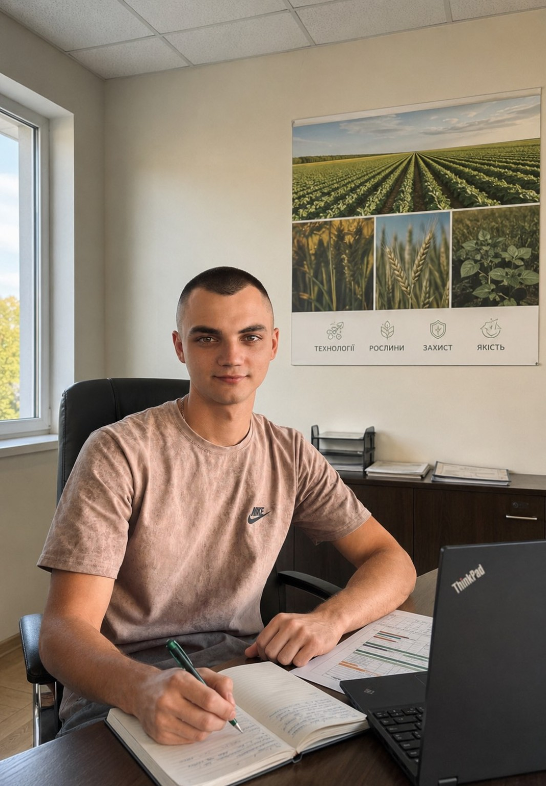

SIVORA
Не тільки теорія.
Агрономія такою, якою вона є в реальному полі — з результатами, помилками, спостереженнями та висновками.
Практика
Знання мають цінність тоді, коли їх можна застосувати до конкретної ситуації в полі.
Чесні досліди
Порівняння варіантів, контроль, спостереження та реальні результати без красивих цифр заради реклами.
Знання
Матеріали для студентів, фермерів та всіх, хто хоче краще розуміти рослину і технологію.
Допомагаємо приймати рішення
Менше зайвих витрат. Більше розуміння того, що відбувається на полі.
Фермер не повинен платити за помилку, якої можна було уникнути.
SIVORA збирає практичні спостереження, досліди та агрономічні знання, щоб допомагати аналізувати технологію, а не просто повторювати рекламні рекомендації.
Технології вирощування
Посів, сівозміна, обробіток ґрунту, живлення, захист та строки виконання робіт.
Мінеральне живлення
Азот, фосфор, калій, сірка, мікро- та макроелементи.
Захист рослин
Бур'яни, хвороби, шкідники та агрономічний підхід до прийняття рішення.
Вологозабезпечення
Вода у формуванні врожаю, критичні періоди та реакція культур на стрес.
Морфологія рослин
Фази розвитку, будова рослини та симптоми дефіцитів.
Аналіз результатів
Порівняння технологій, варіантів досліду та фактичної врожайності.
Навчання, яке виходить за межі аудиторії
Практичний досвід, пояснення агрономії та допомога з навчальними роботами — в одному розділі.

Не просто виконати роботу — допомогти зрозуміти агрономію.
Я працюю агрономом, проводжу польові досліди та продовжую навчатися. SIVORA створена, щоб студент міг отримати те, чого часто бракує в аудиторії: практичне пояснення, виробничий досвід і розуміння технології.
Допомагаю з практикою, звітами, щоденниками, практичними та лабораторними роботами, курсовими проєктами, технологіями вирощування, рефератами та презентаціями.
Консультація безкоштовна 24/7. Платні послуги — від 500 грн. Остаточна вартість залежить від обсягу, складності та терміну.
Зв'язатисяПрактика
Допомога з організацією та матеріалами виробничої або навчальної практики.
Щоденник і звіт
Опис робіт, структура, таблиці, додатки та виробничі матеріали.
Лабораторні роботи
Методика, розрахунки, аналіз результатів та оформлення.
Практичні роботи
Агрономічні задачі, розрахунки та виробничі ситуації.
Курсові проєкти
Структура, практична частина, розрахунки та оформлення.
Технології вирощування
Індивідуальний матеріал від сівозміни й живлення до захисту та збирання.
Реферати
Структурування теми, агрономічний зміст та висновки.
Презентації
Логічна структура, зміст та зрозуміла візуальна подача.
Консультація
Розбір агрономічних питань для фермера та студента.
Технології вирощування
Практична база SIVORA по основних польових культурах.
Озима пшениця
Кукурудза
Соняшник
Соя
Ріпак
Горох
Цукрові буряки
Ярий ячмінь
Агрономічна база
Живлення, критичні фази, мікроелементи, ризики та практичні акценти.
Озима пшениця
Формування листкової маси, кущення та потенціалу врожаю.
Коренева система, енергетичний обмін та ранній розвиток.
Водний режим і стійкість до стресів.
Залежно від ґрунту та стану рослини.
Ключові фази
- Кущення
- Вихід у трубку
- Прапорцевий листок
- Колосіння
- Налив зерна
Основні ризики
- Недостатнє кущення
- Дефіцит азоту та сірки
- Хвороби
- Водний стрес
- Зимові пошкодження
Практичний підхід
Оцінювати густоту, листковий апарат, живлення, воду та фітосанітарний стан.
Вода та елементи живлення
Орієнтири для розуміння потреб культури. Це не готова норма поливу або внесення добрив.
💧 Потреба у воді на формування 1 т урожаю
Орієнтовні діапазони. Реальні значення залежать від ґрунту, клімату, сорту або гібриду та рівня врожайності.
| Культура | м³ води / т | Критичний період |
|---|---|---|
| Озима пшениця | 700–1300 | Вихід у трубку — налив зерна |
| Кукурудза | 450–800 | Цвітіння — налив зерна |
| Соняшник | 700–1200 | Бутонізація — налив насіння |
| Соя | 900–1600 | Цвітіння — налив бобів |
| Ріпак | 700–1200 | Стеблування — формування стручків |
| Горох | 700–1200 | Бутонізація — налив бобів |
| Цукрові буряки | 90–160 | Інтенсивний ріст коренеплоду |
| Ярий ячмінь | 650–1100 | Вихід у трубку — налив зерна |
🌱 Орієнтовна потреба в N, P₂O₅ та K₂O на 1 т урожаю
Ці значення не є автоматичною нормою внесення добрив.
| Культура | N кг/т | P₂O₅ кг/т | K₂O кг/т | Макро | Мікро |
|---|---|---|---|---|---|
| Озима пшениця | 25–30 | 10–12 | 18–25 | S, Mg | Mn, Cu, Zn |
| Кукурудза | 20–25 | 8–12 | 20–30 | S, Mg | Zn, B, Mn |
| Соняшник | 40–50 | 18–25 | 70–100 | S, Mg, Ca | B, Zn, Mn |
| Соя | 65–80* | 15–20 | 30–40 | S, Mg, Ca | Mo, B, Mn, Zn |
| Ріпак | 50–60 | 20–30 | 40–60 | S, Mg, Ca | B, Mo, Mn |
| Горох | 50–65* | 15–20 | 25–35 | S, Mg | Mo, B, Mn |
| Цукрові буряки | 4–6 | 1.5–2.5 | 6–9 | Mg, Ca, S | B, Mn, Zn |
| Ярий ячмінь | 22–28 | 9–12 | 18–25 | S, Mg | Mn, Cu, Zn |
Макро- та мікроелементи
Коротка база про роль основних елементів у житті рослини.
Азот
Білки, хлорофіл, листкова поверхня та інтенсивність росту.
Фосфор
Коренева система, енергетичний обмін і ранній розвиток.
Калій
Водний режим, робота продихів та стійкість до стресів.
Сірка
Синтез амінокислот і ефективне використання азоту.
Магній
Центральний елемент хлорофілу та важлива частина фотосинтезу.
Кальцій
Клітинні стінки, точки росту та розвиток кореневої системи.
Бор
Ріст меристем, запилення та формування генеративних органів.
Цинк
Ферментативні процеси та регуляція росту. Особливо важливий для кукурудзи.
Марганець
Фотосинтез і ферментативні реакції рослини.
Мідь
Ферментативні системи, міцність тканин та генеративний розвиток.
Молібден
Азотний обмін і робота бульбочкових бактерій у бобових культур.
Залізо
Участь у синтезі хлорофілу та процесах перенесення електронів.
Чесні польові досліди
Результат має починатися не з реклами, а з правильно поставленого досліду, спостереження та аналізу.
Вплив густоти
Порівняння різних густот та їх впливу на розвиток і врожайність.
Системи удобрення
Порівняння продуктів, норм внесення та реакції рослин.
Засоби захисту
Гербіциди, фунгіциди та інсектициди у різні фази розвитку.
Порівняння генетики
Реальний розвиток, стійкість та кінцева врожайність.
Мікро- та макроживлення
Реакція рослин на різні елементи, норми та строки внесення.
База реальних результатів
Фото, умови поля, технологія і фактична врожайність.
Мисюра Олег Віталійович
ЗАСНОВНИК SIVORA • АГРОНОМ • ПРАКТИК • ДОСЛІДНИК
Від поля — до знань.
Я працюю агрономом понад два роки та маю справу з реальним виробництвом, технологіями вирощування і спостереженням за культурами.
Працюю з озимою пшеницею, кукурудзою, соняшником, соєю, ріпаком, горохом, цукровими буряками та ярим ячменем.
Проводжу досліди з густотою посіву, системами живлення, гібридами й сортами, фунгіцидами, гербіцидами, інсектицидами та мікро- і макроелементами.
SIVORA створюється як практична незалежна платформа, яка допомагає студентам отримувати більше реальних знань, а фермерам — приймати обґрунтовані рішення.
Є питання? Пишіть або телефонуйте.
Консультація для фермера та студента безкоштовна 24/7.